MUSICA PER DUE VIOLINI E DUE SORELLE
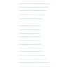
BIOGRAFIA
DUEA è un ruscello vivo d’estate e silenzioso d’inverno, scorre vicino alla casa dove Chiara e Sara sono cresciute, a Sampeyre in Valle Varaita. Questa valle affacciata sul Monviso è ricca di tradizioni che risuonano nelle melodie, nei ritmi e nelle danze della musica popolare, un elemento indispensabile durante le feste.
La musica di DUEA affonda le radici nelle melodie tradizionali, ma prende il largo con brani originali per due violini, contaminati dal folk internazionale e un pizzico di elettronica.
La musica di DUEA affonda le radici nelle melodie tradizionali, ma prende il largo con brani originali per due violini, contaminati dal folk internazionale e un pizzico di elettronica.
CONCERTI 2025
- 05/01 FESTA DEL TARLUC - Pontebernardo
- 11/01 FIRENZE - CPA Fi Sud
- 09/02 ALBA - Albesi in Folk
- 21/02 PRAZZO - Furnel e Pirol
- 28/02 GENOVA - Bandabrisca
- 01/03 NIZZA - Nissart per Tougiou
- 16/03 SAN LAZZARO DI SAVENA - tReno Folk Festival
- 29/03 CARAGLIO - Filatoio di Caraglio
- 12/04 BORGO S. DALMAZZO - Parco del Tesoriere
- 09/07 CUNEO - Officina Santa Chiara
- 10/07 PINEROLO - Sala Tajo
- 20/07 CAVOUR - Vetta della Rocca
- 25/07 SAMPEYRE - Piazza della Vittoria
- 03/08 LONDRA - Dulwick Folk (UK)
- 04/08 LONDRA - Green Note (UK)
- 06/08 PURBECK - Folk Club (UK)
- 13/08 GARESSIO - Chiesa di San Giovanni
- 16/08 CASTELDELFINO - Centro sportivo
- 07/09 SANT'ALBANO STURA - Ass. Liberamente
- 20/09 VERNANTE - Festival Imaginé
2024
- 11 Maggio Casa del fiume CUNEO
- 24 Maggio Il Tesoriere BORGO SAN DALMAZZO
- 1 Giugno Sgrana e Traballa CPA FIRENZE
- 22 Giugno Festa Balfolk MOTTA DI LIVENZA
- 10 Agosto Notte di San Lorenzo VARIGOTTI
- 13 Agosto Revelin Bistrot VINADIO
- 15 Agosto Chez la Joce CHALZAMEL
- 18 Agosto PURBECK VALLEY FOLK FESTIVAL - UK
- 31 Agosto Upega Folk Festival UPEGA
- 1 Settembre Cucunà - Presentazione del nuovo disco ROSBettola ROSBELLA
- 12 Settembre NuOvo CUNEO
- 13 Settembre La Gandolle VERRIERES EN FOREZ
- 14 Settembre La Jasserie MONTBRISONS
- 7 Novembre Borgo San Dalmazzo - Biblioteca "La mia stagione in musica" presentazione del libro di Cinzia Dutto
- 16 Novembre Torino - Circolo dei lettori "La mia stagione in musica" presentazione del libro di Cinzia Dutto
- 17 Novembre Torino - Balfolk al Bal.Un
- 29 Novembre Cuneo - Casa del Quartiere Donatello con COOP MOMO Mescià e Emporio Margherita
- 14 Dicembre Piasco - Deni Pub
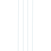
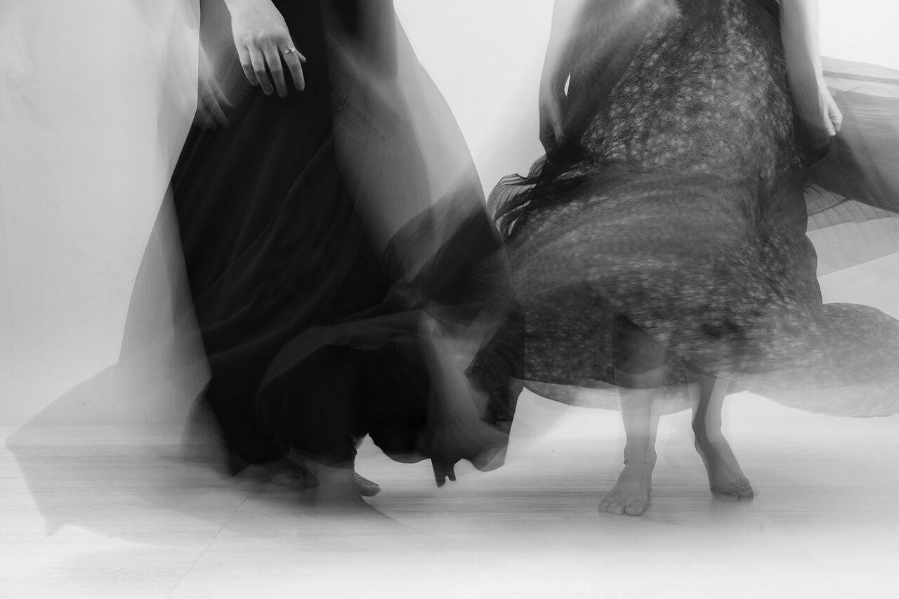
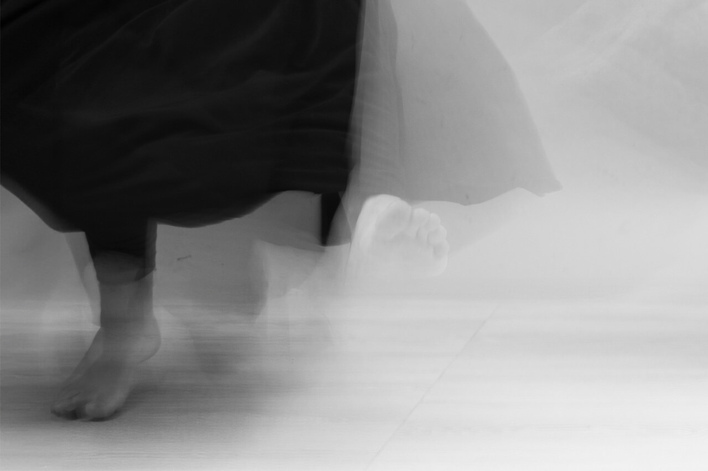
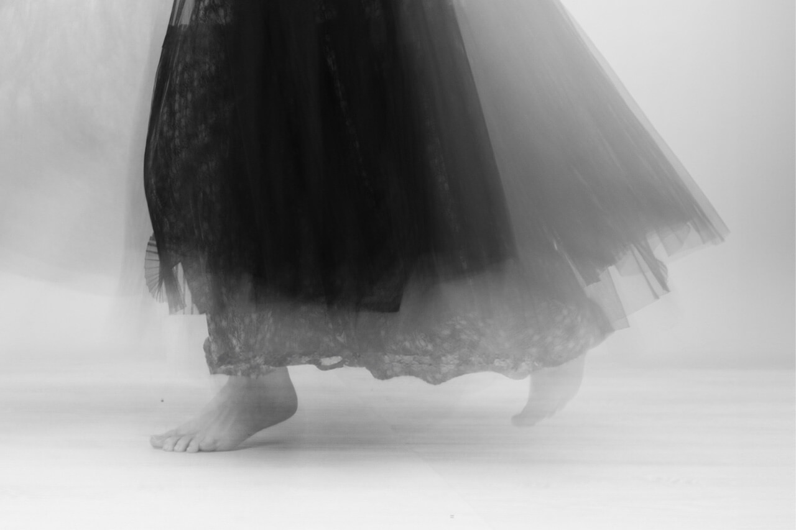
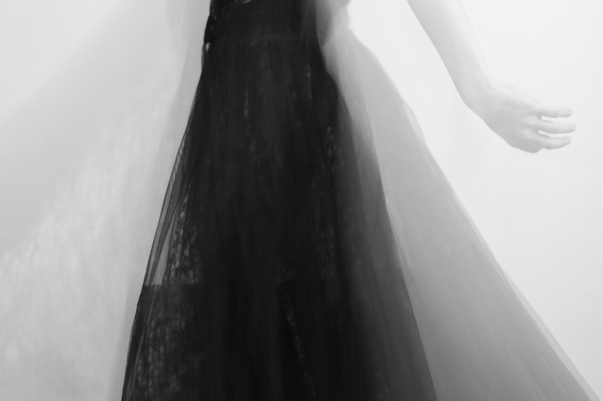
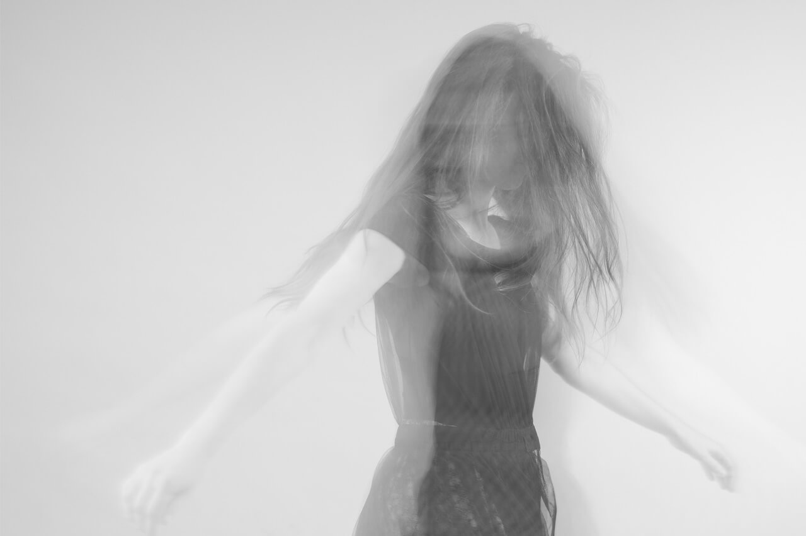
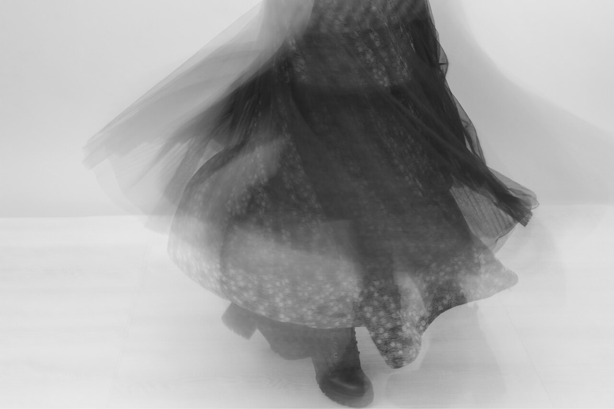
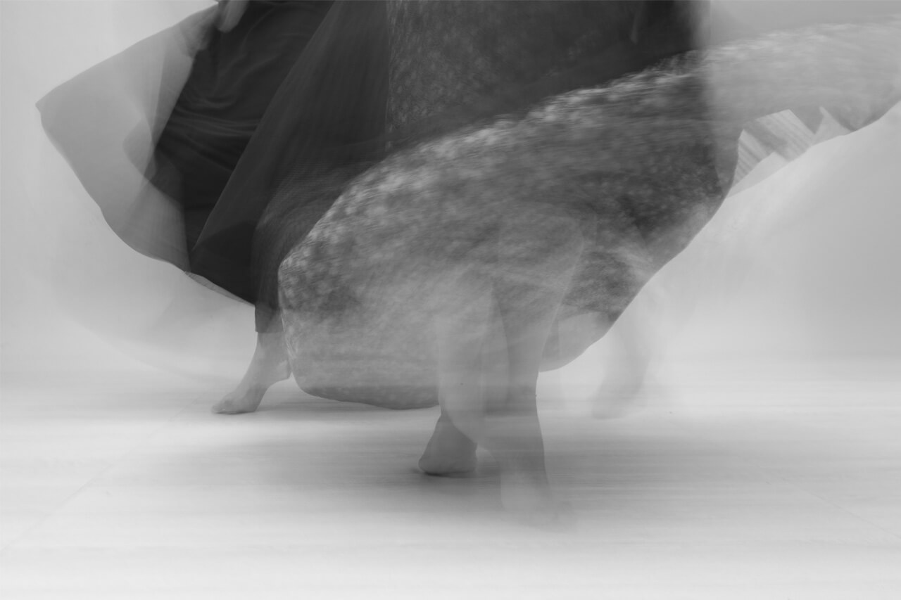
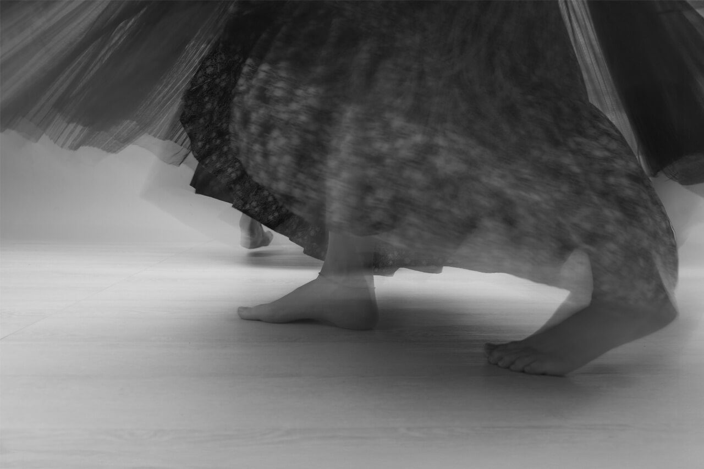
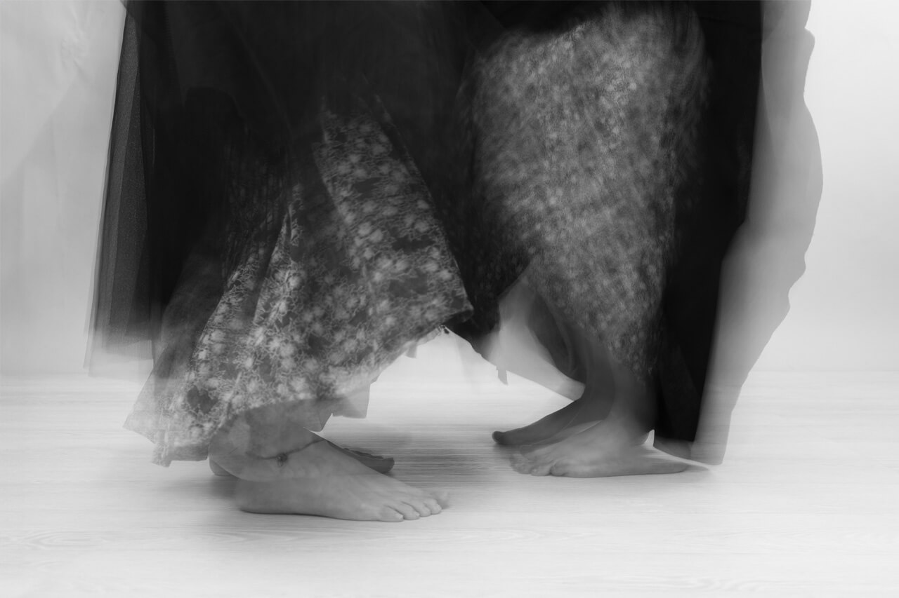
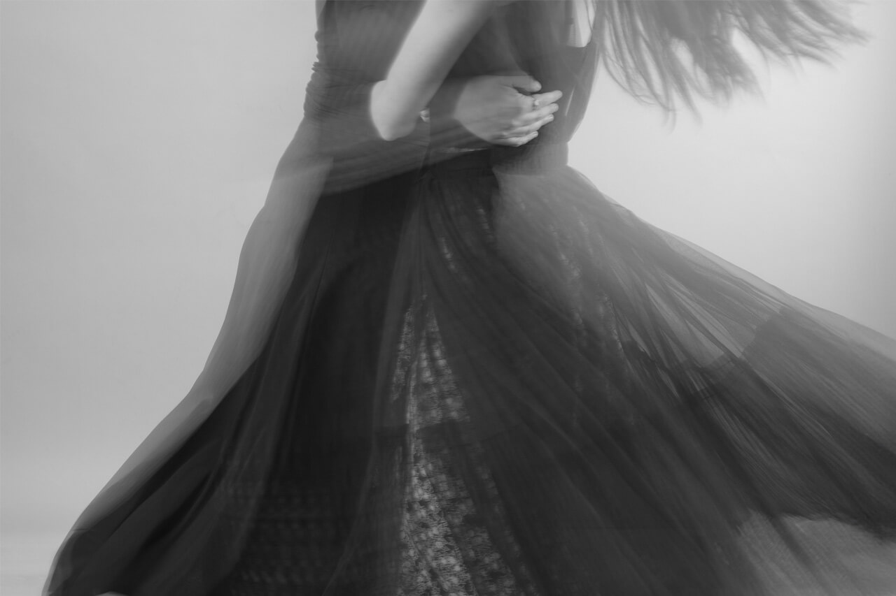
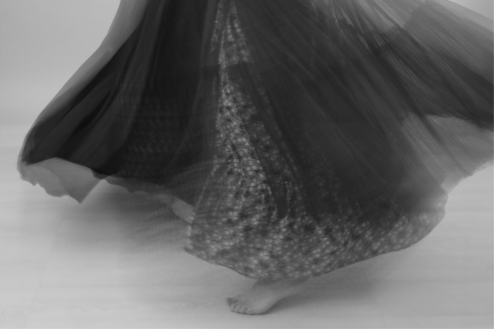